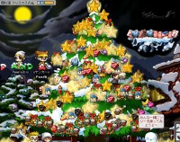
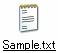
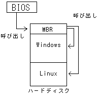

メリークリスマスお前達(挨拶)
っつーわけで遂にやってきました12月24日。
俺とさちょは今頃ロマンティックな雰囲気を醸し出しながら楽しく過ごしているんだろうなぁ＾－＾
…とお思いのあなた！
ふふふ…
そんな事は無いですよ。
いたってふつーーの休日と相成りました('A`)
あぁん。もどかしい(´Д`)
メイポ。
やっと出来ましたねークリスマスマップ。随分久しぶりだわ
今まで溜めに溜め込んできたビッグスターがようやく役目を果たせるってなもんよ！
450個持ってますからね。
 わーいわーいヽ(ﾟ▽ﾟ)ﾉ♪
ちかちか光って…目に悪かったです。
これ、TEVAが属するギルド「PandA」ののシンボルにしようかしらん(*´д`)
んー、いまいちかしら(´σд`)
おまけ(色々な愛の形)
卒業論文終了！
お疲れ様でした！俺。
あーーーーーーー～～～～…めんどくさかった(;´Д`)
長いことかかったなぁ
ってゆーか時間かかりすぎだなぁ（ぇ
よっしゃ、メイポ復帰じゃーヽ(ﾟ∀ﾟ)ﾉ
チャットするぞー狩りするぞークエストやるぞー泳ぐぞー(何 そしてジャドバラアックス欲しいぞー(違
痛いよー
脱臼した左中指と薬指が痛いよー
横方向の力が加わるとコキャッ☆っという軽やかな音と共に激痛。
右足でのふんばりが効かないからバランス悪いです。
階段降りるのも一苦労。
痛いよー
健康ってありがたい。
さちょはSでした。 どうもTEVAです。
まーなんか色々あったんでなんか書いておこうかなってことで、最近の出来事をば。
なんやかんやで卒業論文、一息つきました。
あとは論文抄録ってゆー、一冊の本にするための研究のまとめを書いて終わりです。
卒業できるかどうかまだ確定じゃないんですけどね('`)
ともかく、皆様にはこんな俺なんかのために色々心配をかけていただいて。
ほんとうにありがとうございました；；
どんだけ恩を受けて生きているんだ俺は。ってゆーかどうやって返していこうかこの恩。
みんな大好きです。
卒論を仕上げなけりゃあならんかったので、自主的にメイポ断ちをしてたわけですが、実は一方でさちょ断ちもしていました。
で、まー、あのー昨日一ヵ月半ぶりぐらいに会ったんですけどね、ねぇ。
あいつSですよ。S。
見かけのしょんぼりさに騙されちゃあいかんよみんな。
まあ俺は、色々責められて快感だったんですけどね。（なんだと
僕はMです。うぇうぇ
山奥の温泉に行ったんですよ。たかすみ温泉。(知らん
雪がすっごくてねー、なんの雪山装備もしていない車ではすごく不安だったんですがまーなんとか無事に帰れました。
いや、ちゃうねん。言いたいのはそこじゃなくて。
うちに帰ってからも寒かったのでお風呂入りなおしたのね。
で、久々にメイポにも行って、あゆちゅんの姉御見学とかしてすげー楽しんだんですがっがが。
トイレ行った時、階段から落ちましてねぇ。
ががががーーーー
って。
トイレへの通路を通ってると思い込んで大きな一歩を踏み出したんですけど、そこは空中だったわけで。
二階から一階まで垂直落下ですよ。
電気も点けずに勘で歩いてたからそうなったんですね。
もう一瞬何が起こったか全然わからない。
壁だと思って触ったところがすり抜けてさー
「え？あれ！？うわ、うわあーぉおああがああああでっでで！！」
家族全員叩き起こすぐらいの大騒ぎ。
左手の薬指とかあさっての方向向いてたし
まー大惨事にはならなかったのでよかったです。
軽い打ち身と擦り傷で済みました。
今から接骨医院行ってきます。
普段パソコンを起動したら何をするかっつーと、
メールチェックしてブラウザを起動して適当にHPを巡回して、仕事があればワードとかエクセルを開いて。
ひと段落してなんか暇になったらメイポでもする…ってのが大体のパターンですよね。
まー人によっては千差万別なので一概には言えませんが、普段起動するプログラムってのは大体決まっている事が多いですよね。
でもそれらをいちいちショートカット探してクリッククリックするのもなんか煩わしいもので(´σд`)
せっかくパソコンってゆー便利なおもちゃ使ってるのにそれに使われているんじゃあなんか悔しい。
ならば
そんな作業を自動化してしまおー
ってことで複数のプログラムを一気に起動しちゃう方法をば紹介。
@echo off
start "" /max "起動したいプログラムのフルパス"
これね。
こいつをコピーしてメモ帳に貼り付けてください。
保存する時に適当な名前をつけて（ここではSampleにして）、拡張子を「.txt」から「.bat」に変更します。
つまりファイル名を「Sample.bat」にするわけですね。→
これでバッチファイルっつーのが出来ました。
これは記述されたコマンドを上から順に実行していくだけの簡単なスクリプトです。
簡単に作れて環境を選ばない。これって結構価値あることなんですよ(´▽`)
実用例
| ワードとエクセルを順に起動する。 |
@echo off
|
|---|---|
| Joy to Keyとメイポクライアントを順に起動する。 |
@echo off
|
こんな感じで「Sample.bat」と保存したらば、それをクリックしてみてください。
指定したプログラムが一気に起動しますｂ
例えば俺は、HP作成するのにezHTMLってのを使って、アップロードにはFFFTPを使っていますので、それらもスクリプト書いて一発。
らくちんですねーヽ(´ー`)ﾉ
ちなみに注意点として、上記のプログラムパスは人によって違うので適宜読み替えて書き込んでくださいね。
それと、「/max」のオプションをつけていれば最大化状態で、「/min」に変えれば最小化状態で起動しますし、特になにも付けないで書けば、フリーサイズで起動します。
まー色々やってみてくださいｂ
そしてなんか便利な使い方を教えてください（ぇ
ｵﾜﾙ
よっしゃ、今日は満月。
相変わらず神秘的ねー(*´▽`)
月って好きだわー
月には魔力があって、人は少なからず何かしらの影響を受ける
と、どっかで読んだことがあるんですが、それってもしかして食欲にも影響するのかもしれません。
昨日丹後半島までバスツアーで蟹食いに行ったんですけどね、
蟹三杯と雑炊お茶碗6杯食ってしまったんですよ。
ありえない。
過去の記録はキムチ鍋2人前とご飯5杯。
もうこれ以上は無いだろうとか思ってたんですがあっさり記録更新してしまったわけで(-"-;)
しかも家に帰ってきてからも無性に腹が減ってきて、またご飯食べてしまいました。
あれです。
ごくつぶし。
普段そんなめちゃくちゃに食べないんですがねー。
やはりこれは月の魔力のせいですか。
つまり、何か抗えない特別なチカラが俺を操っていたんですね！
よし、言い訳終了(´σд`)
でと、その夜メイポ行きました。
でも長く離れてると会話がチグハグになってしまってだめですねー
なーんかスムーズな会話が出来ない。
ほんとにすいませんでした＿|￣|○
空気読めよ俺！って自分で叱っておきましたからご安心ください(何
こないだレベルあがったばっかだったので怖いものは何も無く、ジャドバラアックス欲しさに親分いってきました。
まーー余裕なんて無いわけで。チャットとかまともに出来ませんでした('A`)
ゼロー、おまいが暇だって言ってた時に相手できなくてすまなかった；；
しっかし、まさか俺がこんなのを相手に出来るとはなー
大きくなったものだ。
少ししたら、カムイさんと十二時さんが参戦してくれてすんげーうまく狩れました。
うふふ、楽しかったわ(´▽`)
うん、ナイト強いよ。
プリーストっていう保護者がいるけどな！(ﾟ,ﾛﾟ)・;'.、
90ナイトって言ったら伸び盛り。
まだまだ狩りが楽しいよ。
凡夫だけどね
TEVAのPCはノートパソコンです。
デスクトップの方がハードディスクを追加したりいろんなボードを挿せたりと、かなり自由にカスタム出来るのでそっちの方がいいに決まっているんですが、、、
俺の部屋にはそんなばかでかいPCなんて置くスペースはありません＿|￣|○
ゆえにノートパソコンです。
でもノートパソコンのいいところは、図書館や電車で使えたりと、そのモバイル性の高さ。
どこにでも持ち運べるので便利ですよね。
めちゃくちゃ気に入って使ってますよ。
俺のPCはDebianってゆーLinuxとのデュアルブート環境です。
だから起動プロセスは
- パソコンの電源が入る
- BIOSがメモリーやディスク装置をチェック
- HDDやFDDなどブート可能なデバイスを決定
- MBR(Master Boot Record)にあるブートマネージャを呼び出す(俺の場合はGRUB)
- OSをどこから読み出すのかを調べて、WindowsかLinuxかを決定
- 省略(何
- 起動
と、大体このような流れでパソコンは起動します。
つまりこんな感じ。 → 
よーし起動プロセスがわかったところで、さっそく外に持ち出そう！(関係無い)
ガタンゴトーン(電車)
スイッチオン、ポチ。( ･∀･)σ[|
- 電源が入る
- BIOSが(ry
- MBRにあるブートマネージャGRUBを呼び出す
- Windowsに決定。
- 電池切れ
- ＿|￣|○
あのー、普段電源繋ぎっぱなしで使っているので蓄電能力が無くなってしまったみたいね。
起動するだけで電池無くなるとかもう、ね。ｳﾞｧｰ('A`)ですよ。ｳﾞｧｰ('A`)
チクショー電池パック買うぞー
ｵﾜﾙ
まじでCD-Rあげたら喜んでくれた。愛い奴め(´ー`)
でもってこれが母さんがあげたプレゼント
ワイヨットってゆー会社のブックスタンドなんですがね、超素敵です。
母さん、、、あなた素敵なモノ贈るねぇ(´▽`)ってゆーか、俺が欲しいわ！妹なんかにゃもったいｎ
本を参考にしながらなんか打ち込むときって勝手に閉じてきて意外とうっとおしいんだよね。
でもこれがあれば何の問題もありません。うひょぉ
今日も出ます、「アノ言葉」。
わぁぉ超クーール
ｵﾜﾘ
うーん…現時刻4時半。
無駄に徹夜する癖がついてしまったようですな。
体内時計ってなにですか
おっと、今日は妹の誕生日じゃん。
おめでとー妹。
CD-Rでもあげときゃ喜ぶだろ。
うん、喜ぶ(´σд`)
俺が勝手に恩人として扱っている人がいます。
や、俺はもう沢山の人に生かされているので全部羅列してたらページが足りない（なんのだ）ので、このサイトに限定して
こまち様、茶小町様。
このお二人です。
こまち様は、今まで何度も書いてきたようにこのサイトを作るきっかけとなったテンプレート作者です。
茶小町は毒舌ながらも（ぁ 俺たちの良き友達、そしてサイト構築のお手伝いをしていただいたり沢山アドバイスをいただきました。
そのおかげで俺は拙いながらもHTML文法を覚え、どこをどういじればどうなるのかがよくわかるようになりました。
結果、HPを介して沢山の人との交流も可能となり、幸せいっぱいな日々を送っているわけですね。
恩人です、恩人。
茶小町とは、連絡手段があるのでまだいいんです。
でもこまち様はもうサイトを閉鎖されてしまったので音信不通です(ﾉд`)
ここも長いこと閉鎖していたのでこまち様のPCにはアドレスが残っていないのかもしれません。
もう、、、話できないのかな。
一期一会。
出会いは宝、とはよく言ったもので。
人との出会いは大事にしたいものです。(ﾉ＿`.)
今やりたいこと。それはツーリングです。
俺が一番好きなところは九州。
去年友達と行ったんですが、気心知れた友達とはいえ、長い事一緒に行動するとなるとやっぱりいやな面も見えてくるもので。
後半はなんだかいやな雰囲気が漂っていてすっげー悲しい気分になってしまいました。
その友達は何があってもテントで泊まりたがらない子だったしね。
「ばっかおめーツーリングに出てホテルとか健康ランドに寝泊りしてどうするよ？金が続かんわ(本音)」
っとまーそんな感じでした。
だから今度行くときは一人だなって普通に思ってしまいましたね。
で、今年の9月ぐらいにも行きたかったんですが、今やってるアルバイト(警備員)が面白くって面白くって…
またチャンスを逃してしまいました('A`)
茶小町の家に押しかけるつもりだったのに、、、ゲフッゲフフン
寒くなってきました。ってか寒いです。もうだめです。
俺は冬眠します。
あ、冬眠する前にツーリング行きたいなー
あー…運転中に冬眠しちゃうかも。
だめじゃん＿|￣|○
だー！九州、もといツーリングしたーい！
今月の目標は、憶測でものを言わないです、どうも手羽です。
なめてんのかっ!?てぐらい寒いですね。
だから布団で寝るのが気持ちいいわけですが、、、うっかり19時まで寝てしまいました。
あーもう、無駄の多い人生ですね。('A`)
昨日メイポにINしたんですが、やっぱり楽しいですねー
チャットが楽しいのなんのって。さいこーですじゃ、サイコーー
どれぐらいサイコーなのかってーと、1年ぶりぐらいに復帰した、個人的に大好きなむあっ子(哭のイラク)がギルドに加入したり十二時さんがナイト再開してなんとなく心強かったり泳げるようになってたりついに俺のレベルが90に到達したり俺のレベルが90に到達したｒ( ´∀`)つ)´д`)･;'.､ﾊﾌﾞｧ
あーもうサイコー(*´▽`)
と、ここでいきなりですがゆみさんから渡されたバトンとやらをやってみます。
Ｑ1.いつからMapleStoryをはじめた？ ☆ えー、実習中だったから、昨年九月の夏ですな。うお、もう一年半近くやってんじゃん。 Ｑ2.最初に選んだ髪型は？ ☆ なんて答えたらいいのかな、これです→ Ｑ3.今の髪型は？ ☆ そのまんま。 Ｑ4.髪型かえたい？ ☆ 思わないですな。これ気に入ってますので。 Ｑ5.異性のいいと思う髪形は？ ☆ 綾波（ぁ Ｑ6.最初に作ったキャラの名前は？ ☆ 【TEVA】です。 Ｑ7.今の愛用キャラは？ ☆ 作り直しする根性無いし、愛着あるからTEVAのまんまですね。 Ｑ8.みんなからなんて呼ばれてる？ ☆ TEVA、てヴぁ、てば、手羽、手羽先、たば(何 Ｑ9.今の顔は？ ☆ 切れ目が好きなので、上の顔。 Ｑ10気に入ってる？ ☆ ゆむ。好きよぉ Ｑ11.変えるとしたら？ ☆ 変えないと思うね。 Ｑ12.異性のいいと思う顔は？ ☆ これこれ。→(なんでやねんって突っ込みは受け付けません。) Ｑ13.最初は何サーバー？ ☆ 特に何も考えずに決めた、かりん Ｑ14.今は？ ☆ サバ変えなんて考えた事無いね。 Ｑ15.そこのサーバーのいいところは？ ☆ そんなのあるのか？ Ｑ16.悪い所は？ ☆ 知らん(何 Ｑ17.メイポで尊敬している友達は？ ☆ 十二時さんとシャオさんとスナ付近 Ｑ18最近仲のいい友達は？ ☆ 最近っつーか、基本的に一度会ったら友達志向(何 Ｑ19.メイポでメールしてる人いる？ ☆ なんか沢山います。(ﾉ▽`*)ｳﾌﾌ Ｑ20.いたら何人？ ☆ 11人ですよ。 Ｑ21.気が合う友達ナンバーワンは？ ☆ 十二時さん(ﾟﾛﾟ)ｸﾜｯ Ｑ22.誰かとリアで会ってみたい？ ☆ 知り合いとは全員と会いたい気持ちでいっぱいですね（ぇー Ｑ23.特に誰と？ ☆ ちゃるこ（ぁ Ｑ24.おすすめのアイテム(装備でもいい)は？ ☆ 錬金術の触媒である、閉坑書。貧乏人の味方だね。 Ｑ25.何の武器を装備したい？ ☆ ジャドバラアックス Ｑ26.失敗談を教えて ☆ そりゃまあ２次職になってからも振り続けてしまったアイアンボディですよ。10あります＿|￣|○ あー、それともうひとつ。
これに30%貼って消した事かな。 Ｑ27.成功談は？ ☆ 10%書が2回成功して生き残った(ここ重要)、モギさんから戴いたヘリオスｂ 今も愛用しております。 Ｑ28.誰に回しますか？ ☆ んー、まあさちょにでも。 最後まで読んでくれた方。サンキューです。
追伸：カニングでサマエルの人気をageた犯人は俺です。あひゃひゃ(ﾟ∀｡)
ただいまー
一週間ぐらい友達の家に泊まりこんで卒論仕上げちゃいましたｂ
無事提出できましたよーヽ(ﾟ∀｡)ﾉ
 じゃじゃんｂ
じゃじゃんｂ
12月8日15時現在はちょっと必要なものがあったため一時帰宅なのです。
なーんか提出するだけじゃあ終わりじゃないみたいで、発表会とか論文抄録とか出さにゃならんみたいで('A`)
いつの間にか12月にもなってしまったし、ここも整理しなきゃあならんのですが如何せん時間が無い。
ってゆーか俺の時間振りが下手だけなんですがね。(;´д`)
ゆみさんから貰ったバトンはまた後でｂ
そして今晩あたりメイポに顔出すつもりでーす。ヽ(ﾟ∀｡)ﾉ楽しみじゃい。
ｵﾜﾙ

{kind=link}
{kind=link}
{kind=link}
{kind=link}